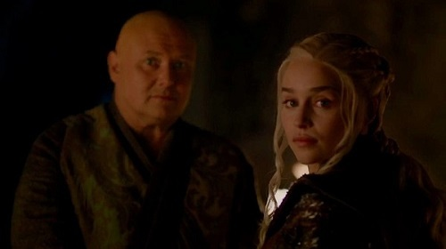
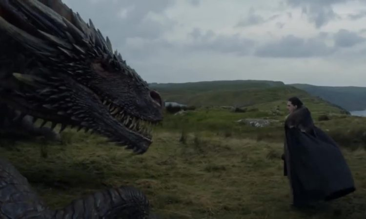

Tập Cuối Game of Thrones sẽ có những gì?
Mẹ Rồng, Jon Snow đối đầu, loài Bóng Trắng trỗi dậy hay Bran Stark thành Dạ Vương là suy đoán của fan và một số cây bút.
Tập sáu mùa tám Game of Thrones (Trò chơi vương quyền) sẽ phát sóng sáng 20/5 (giờ Hà Nội), kết thúc hành trình series gây sốt toàn cầu. Ở tập gần cuối, tình tiết Daenerys (tức Mẹ Rồng) tàn sát người dân dù kẻ thù đã đầu hàng gây bước ngoặt lớn, khiến diễn biến ngày càng khó lường. Trang Esquire tổng hợp một số giả thuyết của fan và các cây bút cho tập cuối.
Varys đầu độc Daenerys

Varys (trái) muốn làm phản Mẹ Rồng nhưng bất thành, bị xử tử.
Ở tập gần nhất, Varys - cận thần của Mẹ Rồng - bị xử tử khi thuyết phục Jon Snow lật đổ cô. Tuy nhiên, trước đó nhân vật có cảnh bí hiểm khi trò chuyện với một đứa bé - người cho biết Daenerys không chịu ăn. Varys nói họ sẽ "thử lại" ở bữa khuya. Theo một số fan, Varys đã đầu độc Daenerys - có thể sẽ dẫn đến tình tiết quan trọng ở tập cuối. Ông vốn là người mưu trí và bình thản trước lúc chết.
Bóng Trắng trở lại
Hậu trường hóa trang Dạ Vương "Game of Thrones".
Chuyện quân Bóng Trắng bị tận diệt chỉ sau trận chiến trong tập ba mùa cuối khiến nhiều fan chưa hài lòng. Họ cho rằng chúng vẫn còn mầm mống đâu đó và sẽ hồi phục. Mùa hai có tình tiết nhân vật Craster hiến những đứa con mới sinh cho Bóng Trắng - có thể thành thế hệ tiếp theo của loài này.
Các đội quân tấn công Daenerys
Golden Company
Trước khi chết, Varys có cảnh viết thư, tiết lộ về thân thế hoàng tộc của Jon Snow (không rõ người nhận). Theo Esquire, Varys đang cố vận động các gia tộc chống lại Daenerys - người ông nghĩ không thích hợp để cai trị. Mẹ Rồng đã thắng Cersei nhưng chưa hoàn toàn áp đặt sự thống trị lên mọi vùng lục địa Westeros.
Jon Snow và Daenerys sẽ chết
Jon Snow và Daenerys vốn là đồng minh, người yêu nhưng ngày càng e ngại nhau.
Jon và Mẹ Rồng đang là hai nhân vật có chính danh nhất để lên ngôi. Tuy nhiên, cây bút Matt Miller của Esquire đoán cả hai chết. Với hành động gần đây, Daenerys bỗng trở thành nhân vật phản diện của series - nhiều khả năng lãnh hậu quả. Trong khi đó, cái kết với Jon Snow lên ngôi quá bình thường so với câu chuyện Game of Thrones.
Miller đoán tập cuối xoay quanh mâu thuẫn giữa bộ đôi với kết quả bi kịch. Một hướng giải quyết khác của xung đột này là Arya Stark sẽ giết Daenerys. Ở tập gần nhất, nữ sát thủ mắc kẹt trên đường phố khi Mẹ Rồng bắt đầu tàn sát dân thường. Trong trailer tập cuối, Arya nhìn Daenerys với ánh mắt nghi ngại khác thường. Còn cây bút Sarah Sense đoán người ra tay với Mẹ Rồng là Sansa Stark - nữ chúa phương Bắc vốn không thích Daenerys.
Sansa và Tyrion tạo ra một kiểu chính phủ mới

Nhiều fan cũng đoán Sansa (trái) và Tyrion sẽ kết hôn sau nhiều thăng trầm.
Theo cây bút Matt Miller, kết cục thỏa mãn cho Game of Thrones là không có ai lên ngôi, do đó kết thúc vòng lặp của chiến tranh, chia cắt bao đời qua. Anh đoán sau khi Jon và Danerys chết, Tyrion Lannister và Sansa Stark - hai người giỏi nhất về chính trị còn lại - sẽ thành lập chính phủ dân chủ, trong đó quyền lực không gom hết về một cá nhân.
Daenerys có thai
Cây bút Sarah Rense đoán biên kịch cài tình tiết này để gây bất ngờ. Việc Daenerys có thai sẽ khiến Jon Snow không ra tay với cô, hoặc khiến Daenerys tỉnh táo lại. Đứa trẻ này cũng có thể trở thành thế hệ kế cận cho các câu chuyện sau này của series.
Bran Stark là nhân vật phản diện
Bran Stark chứng kiến Jon Snow ra đời.
Ngoài việc tiết lộ thân thế Jon Snow, Bran Stark không có nhiều vai trò trong tập này. Cây bút Gabrielle Bruney cho rằng Bran đang dần trở thành Dạ Vương tiếp theo. Cậu bị biến đổi thân thể sau lần đụng độ Dạ Vương ở một tập trước đây. Nếu vậy, nhân vật này sẽ gây ra sự trỗi dậy mới của loài Bóng Trắng.
Vẫn còn những con rồng khác

Jon Snow tiếp xúc với rồng trong "Game of Thrones"
Ban đầu, Daenerys có ba con rồng nhưng hiện tại hai đã chết, chỉ còn con Drogon. Một số fan có giả thuyết Drogon là rồng cái và đã đi đẻ trứng trong thời gian biến mất ở mùa năm. Do đó, loài rồng vẫn có thể tồn tại và sinh sôi trong tương lai.